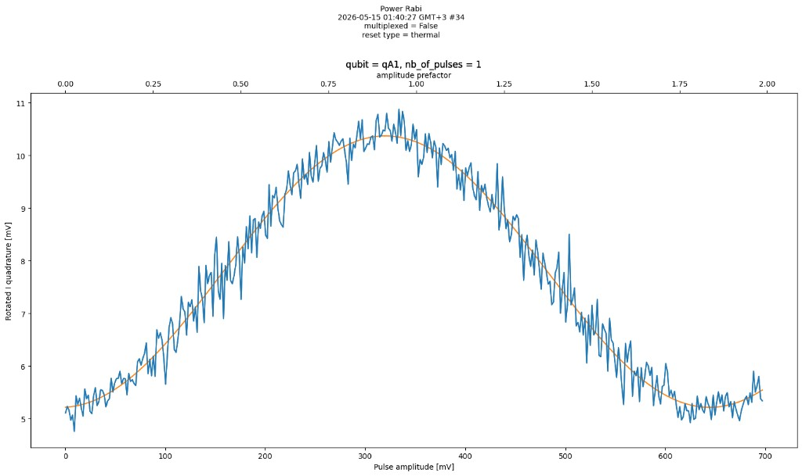

Find the pulse that drives a qubit from |0⟩ to |1⟩
Amplitude Rabi calibration finds the π-pulse: the drive amplitude that, at fixed duration, fully flips a qubit from |0⟩ to |1⟩. That amplitude is stored and used in later calibration steps.
What you’ll learn
After working through this widget, you should be able to:
- Explain that an on-resonance drive of fixed duration rotates the qubit farther as amplitude grows, so a π-pulse can fully flip |0⟩ to |1⟩.
- Identify the π-pulse as the smallest drive amplitude at the first P(|1⟩) maximum, found by sampling many shots—not from a single noisy point.
- Find the same π-pulse landmark on hardware traces, even when the vertical axis is a voltage rather than P(|1⟩).
Instructions
- Open What this calibration is for to see which steps come first and what the π-pulse is used for next.
- Start with Pulse & state. Move the amplitude slider and observe how pulse height changes the qubit rotation.
- Continue to Find the π-pulse. Sample two amplitudes manually, compute four more as a batch, predict where the first P(|1⟩) maximum lies, then test the prediction with a sweep.
- Finish with Lab data and identify where a calibration value should be read from noisy hardware measurements.
Tabs remain available at all times; the green completion cues only suggest an order. Use Tab to reach controls, ←/→ on the tab list to change lessons, arrow keys on sliders to change amplitude, and Esc to reset the active experiment.
What this calibration is for
This is the amplitude Rabi step: find the on-resonance drive amplitude that produces a π-pulse — a full flip from |0⟩ to |1⟩. Later calibration uses that pulse as a building block.
It only works after these earlier experiments are already calibrated:
- Resonator frequency from resonator spectroscopy
- Readout power from resonator punch-out
- Qubit transition frequency ω01 from qubit spectroscopy
With those fixed, this experiment holds pulse duration and drive frequency on resonance and hunts for the amplitude Aπ.
The first maximum, not a later one. P(|1⟩) returns to a maximum near 3Aπ and 5Aπ as well, so several amplitudes flip the qubit. The smallest one is chosen because a larger pulse delivers more power (heating, leakage above |1⟩, and amplifier nonlinearity), takes longer to rotate so decoherence has more time to act, and multiplies any amplitude error by 3 or 5 in the final rotation angle.
What’s next. That amplitude is then used to:
- Flip to |1⟩ for T1 energy-relaxation measurements
- Run Ramsey fringes and Hahn echo for precise frequency and coherence
- Build calibrated rotations (DRAG, error amplification, randomized benchmarking)
Amplitude Rabi lesson
1. Connect pulse amplitude to qubit rotation
The pulse duration stays fixed, and its frequency is held on resonance with the qubit. Only amplitude changes. Off resonance the rotation would be slower and could never fully invert the qubit; this lesson is the on-resonance case, where a π-pulse can take |0⟩ all the way to |1⟩.
Bloch sphere — state rotates with amplitude
Each new amplitude is a fresh pulse from |0⟩. Drag the sphere to rotate the view.
Amplitude0.00
Rotation θ0.00π
State probabilityP(|1⟩) = 0.00
θ is the rotation angle of the qubit on the Bloch sphere, measured from |0⟩.
Explore at least two non-zero amplitudes, then answer the question.
2. Discover the π-pulse from P(|1⟩)
Our goal is to find the amplitude that will take a qubit from |0⟩ to |1⟩. To do this, we apply different amplitudes and estimate the probability the qubit is in |1⟩ at each one, recording that relationship in a graph. The probability vs. amplitude graph starts empty. Every set of 200 shots adds one noisy estimate. Your target is the first amplitude where P(|1⟩) is maximal.
The experiment — Amplitude Rabi sequence
- Choose one pulse amplitude Ai.
- Run the pulse sequence once: initialize |0⟩, drive at ω01 using pulse amplitude Ai, then read out and classify the result as |0⟩ or |1⟩.
- Repeat at the same pulse amplitude Ai many times to estimate P(|1⟩) for that pulse amplitude.
- Move to the next pulse amplitude and repeat, building the plot of P(|1⟩) versus pulse amplitude.
A related experiment is a time Rabi (or length Rabi): hold amplitude fixed and sweep pulse duration instead. Here we keep duration fixed and sweep amplitude.
Choose a non-zero amplitude first.
Sweep unlocks after you guess the π-pulse window.
Selected drive pulse
Your P(|1⟩) samples
Look here after every sample. Find the amplitude that gives the first maximum—later peaks also reach |1⟩, but the smallest flipping amplitude is the one worth storing.
Bloch sphere
Choose four more amplitudes for a batch
You already compared two pulse heights manually. You can choose four amplitudes here and compute them together, or keep sampling by hand until you have 6 points—either path unlocks the sweep guess. The state vector leaves the Bloch sphere during a batch because those points are not being inspected one at a time.
Before the sweep—guess the π-pulse
Look at the probability graph and identify where its first maximum may lie.
π-pulse found
Amplitude that generates the first full flip: Aπ = ?
Why the first peak and not a later one? The curve peaks again near 3Aπ and 5Aπ, where the state rotates through 3π or 5π and still lands on |1⟩. Those pulses are worse choices: they push much more power into the qubit, which heats the chip and can leak population into states above |1⟩, and they spend longer rotating, so decoherence has more time to act. They also amplify mistakes—a small error in amplitude is multiplied by 3 or 5 in the rotation angle—and large amplitudes can exceed the linear range of the amplifiers and mixers. The smallest amplitude that flips the qubit is the cleanest and most stable gate.
Complete the guided measurements and sweep to reveal the π-pulse.
3. Read amplitude-Rabi data from hardware
These are examples from two control stacks.
From P(|1⟩) to volts
You never measure P(|1⟩) directly. Each shot sends a readout pulse through the resonator, and the instrument records the returned signal as a voltage. Averaging 200 shots gives one averaged voltage per amplitude, and that is what these hardware plots show on the vertical axis—often labeled I, Q, or magnitude in arbitrary units.
The voltage is a linear stand-in for P(|1⟩): |0⟩ and |1⟩ each sit at their own voltage level, and the measured value moves between them. Because the shape is the same, the calibration step is unchanged—find the first maximum. You do not need to convert volts into a probability to read off Aπ.
Quantum Machines example

Qblox example

Answer the hardware-data question to complete the lesson.